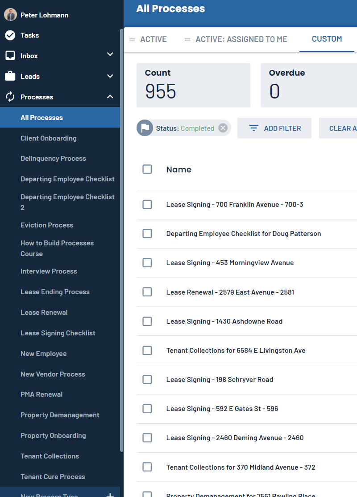
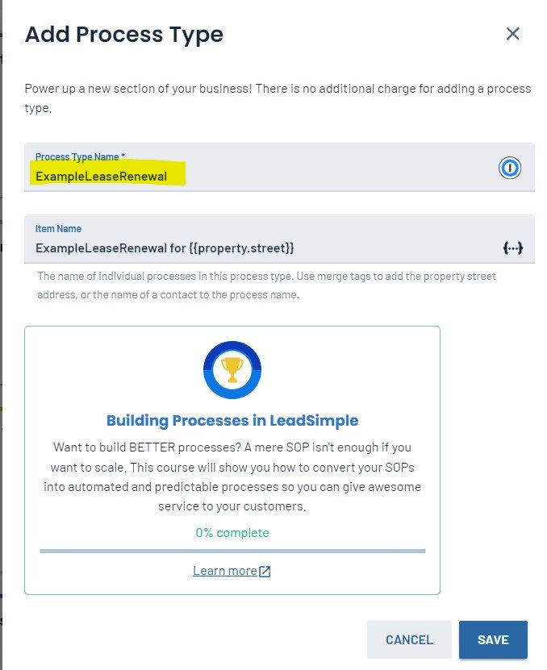
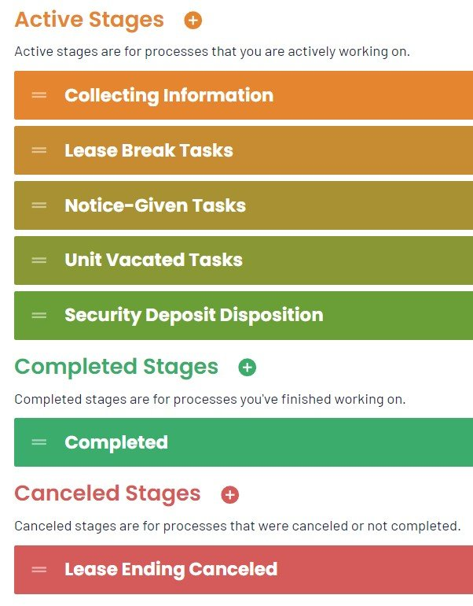
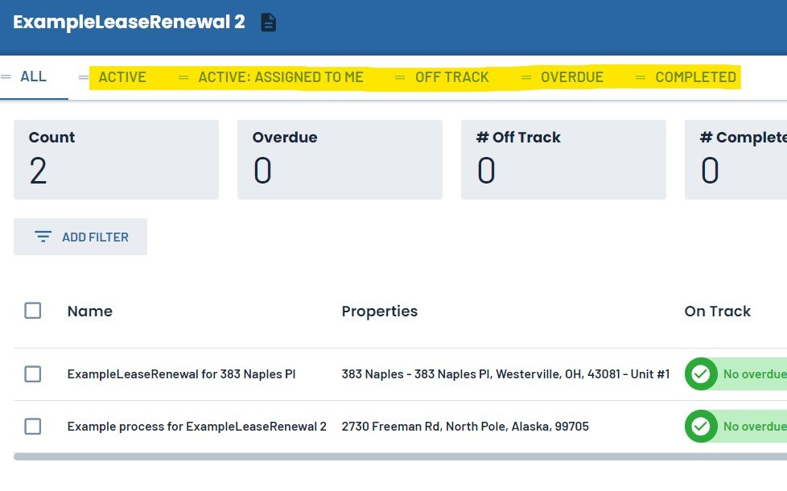

Excited to get started using LeadSimple, but unsure how to proceed?
I get a lot of questions about this, and figured it might be useful for me to summarize and document a few of my recommended best practices.
Some people I talk to are worried that their team won't actually use the software, or just feel unsure about how to actually start getting value from LeadSimple. Or, they signed up but now it's been a few months, and they feel stuck.
I co-founded RL Property Management located in Columbus, Ohio and we manage ~650 residential rental units for around 300 property owners. LeadSimple makes it possible for our company to do this with ease; we've completed nearly 1,000 processes:

Getting Started
I’m going to assume you already have access to LeadSimple (not yet a customer? Click here to sign up.)
1. Pick a process to start with. My suggestion is Lease Renewals, but you could also consider starting with your Move-In, Move-Out, New Property, or New Client process.
2. Grab whatever documentation you have for that specific process. This might be something in Asana or Process Street, or it could simply be a Word/Google Docs page. Doesn't matter; anything helps. If you have no documentation at all, go talk to the person who currently does this task and get them to explain how to do it step-by-step. You don't need every detail yet, just a general idea of the steps required.
3. Open up LeadSimple and click "New Process Type +", then "+ New Custom Process". Don't worry if this is technically a duplicate of an existing process that was built but you're not using. We're going to start fresh. Name your process and click Save. Don't worry about the "Item Name."

4. The software is going to create your process type, and then you will land on a screen with a bunch of configurable settings. Ignore all that for now. Click on “Stages & Workflows. You should have a nice-looking graphic with Blue, Orange and Green blocks.
I need to pause for a minute and explain how LeadSimple “thinks about” processes. LeadSimple has a concept called “Stages”, which is basically just the status of a process. When you see “stage”, think status. There are 4 categories of stages: Backlog, Active, Completed and Canceled. You can totally ignore Backlog for now, and the other 3 are pretty self-explanatory. To give you a sense of how this works in practice, here’s a screenshot of the stages in our Lease Ending process:

5. Now that you know what a stage is, it’s time to name & create the stages for your process:
Delete the Backlog stage using the ‘3-dots’ dropdown menu on the right.
Create a Canceled stage using the red ‘+’ button, and give it a name appropriate for your process.
Create 3 to 6 Active stages and give them names appropriate for your process. You can think of stages in this category as major milestones in the completion of your process (see example above).
Note: It’s easy to go back later and adjust these, so don’t worry about getting them perfect.
6. Click on the first Active stage. This will take you into a screen where you can view and add different types of tasks for this stage, such as To-dos, Emails, Calls, etc. The only one you need to think about right now is the button that says “Todo.”
7. Click “Todo” and describe the first step of this process (see step 2). Keep it short and sweet (you can add the “Task Instructions” button to add more information and detailed instructions). Click the hand button to “de-select” it. Ignore all the other buttons to the right-hand side.
8. Repeat step 7 until you have added all the steps for that process. Then do the same thing for each of the other stages. Most stages should have around 3 to 12 tasks inside them. If you have more than that, consider splitting that stage into two.
Congratulations, you built your first process!
I deliberately kept this dead-simple. We did not use any email templates, conditional logic, custom fields, role assignments, or zaps. That stuff can come later. The goal is to get you using LeadSimple!
Now I’ll explain how to actually run a process.
Every process has a trigger. Let’s pretend the residents at 123 Main St just gave notice to vacate. This means it’s time to kick off your Move-Out Process (a notice to vacate is an example of a process trigger).
Go back into LeadSimple and click the button at the top right that says “Start Process”. This is going to open up a form, but don’t worry, you can ignore most of it. Add the appropriate Property to the process and select a sensible due date (when you expect all tasks for this move-out to be completed). Everything else can be left on the defaults. Now click Save.
This will create the process instance and put you on the Overview screen. From here you can see what stage the process is in (there’s handy color coding too) and all the tasks for that stage listed out. As you complete tasks, check them off. Move the process to the next stage at the appropriate milestone, and the tasks for that stage will appear.
Congratulations, you ran your first process!
If you click the process name in the left-hand column, you’ll see a process overview dashboard that shows all the processes of that type. There are many filters you can use, if you just want to see active or overdue processes for example. This screen also shows you the current stage, so you can easily see the status of all your processes at a glance. This is a great way to keep tabs on your team and see if they are keeping up with work or falling behind. You can save different filter views and navigate between them along the top:

Here’s what you need to do now:
Start using your new process right away. The key is to actually use the software to guide you (or a member of your team) through the completion of the process each time. Stop using any other tools or software to create new processes (OK to use it to finish off and close out existing processes, though). All new work related to this process type should be done in LeadSimple.
As you’re using LeadSimple, you’re almost immediately going to notice problems (or think of ideas for improvement). This is perfectly normal. I encourage you to get in the habit of immediately going into the Settings (gear icon top right) and adjusting the stages or tasks anytime you think of something. Don’t wait. Train your team to do this too. You want to create a culture of continuous improvement. Play around with stages, stage names, task names, task ordering, all that stuff. Keep messing around with it until you have exactly how you want it.
Start adding “the fun stuff” into your process as you become familiar with LeadSimple. Some great places to start:
Email templates (huge - start here)
Conditional logic to hide tasks in certain situations (when they aren’t relevant)
Role and task assignments so everything gets assigned to the right person automatically
Detailed task instructions, with images and video (eg loom) tutorials
“Create Process” and “Stage Change” tasks are very powerful
Autopilot can kick off your processes automatically, given a set of criteria. Lease Renewals is the classic use case.
More Resources to Learn LeadSimple
-Learn LeadSimple Live quick start classes offered by LeadSimple (highly recommended).
-Watch me build a process in real-time on YouTube.
-How to think through a process (possibly my favorite article of all time on processes)